Encuesta realizada
Para conocer el comportamiento de los alumnos respecto a las redes sociales se les pidió que rellenaran una encuesta. Los resultados de la encuesta se muestran a continuación. Después de estos aparece las conclusiones que hemos extraido de estos resultados
Sexo y edad de los encuestados:
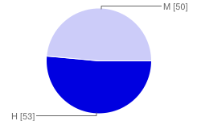 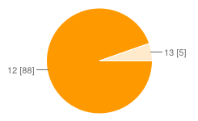
¿Tienes teléfono móvil?:
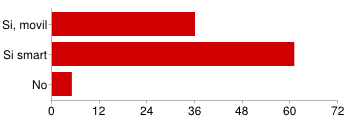
¿Qué redes sociales utilizas?
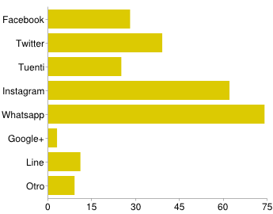
¿Para qué utilizas las redes sociales?
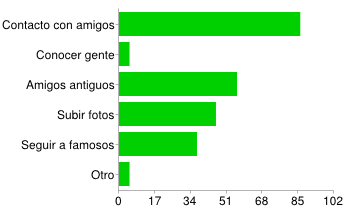
¿Con qué frecuencia usas las redes sociales?
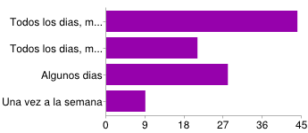
¿Sueles colgar fotos tuyas en las redes sociales?
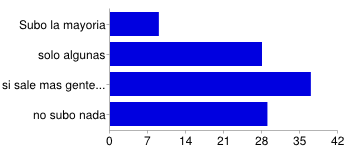
¿Tus amigos han colgado alguna foto tuya en las redes sociales?
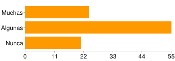
Cuando un amigo cuelga una foto tuya en una red social ¿te pide permiso antes?
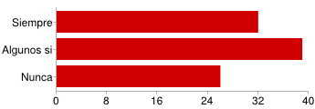
Si tienes Twitter... ¿sigues a todas las personas que te siguen?
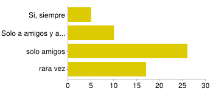
¿Crees que se pueden correr peligros en las redes sociales?
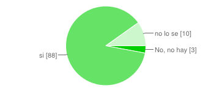
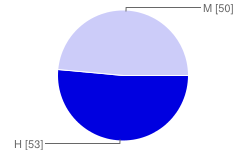 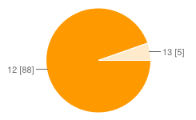
¿Tienes teléfono móvil?:
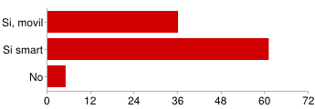
¿Qué redes sociales utilizas?
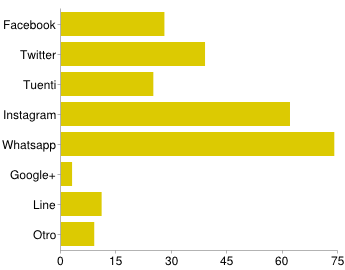
¿Para qué utilizas las redes sociales?
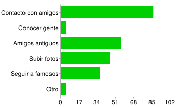
¿Con qué frecuencia usas las redes sociales?
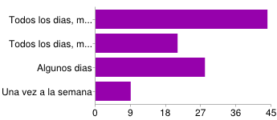
¿Sueles colgar fotos tuyas en las redes sociales?
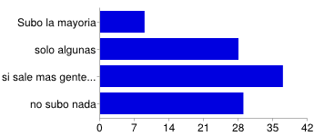
¿Tus amigos han colgado alguna foto tuya en las redes sociales?
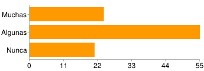
Cuando un amigo cuelga una foto tuya en una red social ¿te pide permiso antes?
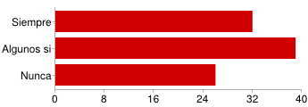
Si tienes Twitter... ¿sigues a todas las personas que te siguen?
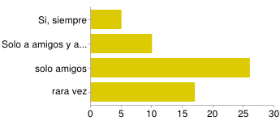
¿Crees que se pueden correr peligros en las redes sociales?
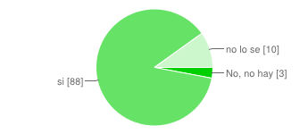
- Los entrevistados son 103 adolescentes de entre 12 y 13 años de 1º de la ESO con una distribución aproximadamente idéntica entre chicos y chicas.
- Casi todos ellos tienen alguna clase de móvil, y para la gran mayoría de ellos es un Smartphone
- Las principales redes sociales que usan son WhatsApp e Instagram, que usan para comunicarse con sus amigos y compartir fotos. Otras redes sociales que usan son Twitter, Facebook o Tuenti, aunque con menos frecuencia.
- La mayoría de ellos usa las redes sociales con bastante frecuencia (al menos una vez al día), que es parecido al porcentaje que tienen Smartphone. El resto de ellos también reconoce que, aunque con menos frecuencia, también acceden a este tipo de redes al menos una vez por semana.
- Analizando el material que suben a Internet, un tercio de los alumnos reconoce que sube fotos sin demasiado cuidado y otro tercio al menos considera pedir permiso si hay más personas en la imagen, mientras que el resto dice que nunca publica fotos suyas.
- Cuando se les pregunta sobre ese mismo comportamiento, pero de sus amigos, se observa que su percepción difiere respecto de lo anterior: la mayoría considera que sus amigos suben fotos suyas, tanto si tienen su permiso como si no.
- Por último, casi todos ellos reconocen que existe alguna clase de peligro en las redes sociales. Sin embargo, es preocupante que algunos de los alumnos consideren que no hay ningún peligro (por suerte, solo 3 de ellos), o que no saben a lo que nos referimos con “peligro”, cosa que esperamos haber solucionado a menos parcialmente con las recomendaciones que les hicimos al final de la charla.